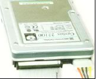
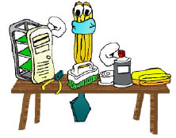
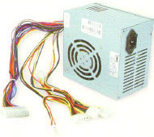
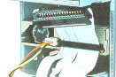
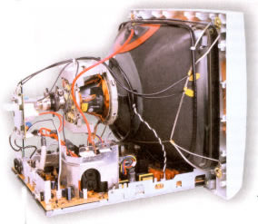
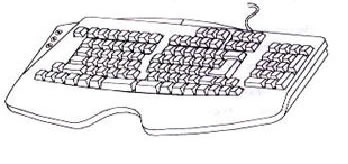
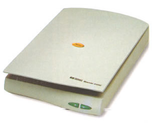
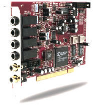
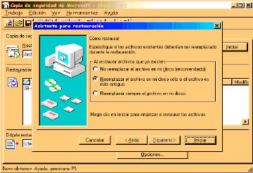
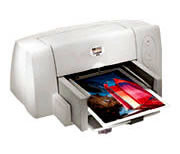

La guía didáctica se elaboró con la finalidad de que usted conozca las diferentes partes que
conforman el paquete de cómputo, así como la utilidad de cada una de éstas. Está elaborado con el propósito de que usted cuente con una serie de prácticas que reafirmen
cada una de las lecciones que conforman el curso de Mantenimiento preventivo y correctivo
para PCs a distancia. Su diseño le permitirá contar con diez prácticas de los temas que se
exponen en los videos; y en aquéllos donde así se requiera, se plantea una situación que
conlleva al participante a resolver y ejercitar cada una de las lecciones.

1. CONOCE TU COMPUTADORA
· Partes de la computadora personal.
- Disco duro.
- Memoria RAM.
- Tarjeta Madre.
- Lectora de disco flexible.

2. ARREGLANDO PARA LIMPIAR
· Elementos esenciales para limpiar
componentes.
- Mesa de trabajo.
- Herramientas necesarias.
- Precauciones que se deben tomar.
- Productos de limpieza.
- Limpieza externa del CPU.

3. DALE UN BAÑO A TU PC
· Componentes del CPU.
- Desemsamblar el CPU.
- Limpieza de las tarjetas de expansión.
- Limpieza de la fuente de poder.
- Retirar cables internos.

4. LIMPIEZA PROFUNDA
· Otras opciones:
- Remover el polvo del interior.

5. ARMAR Y DESARMAR CON PRECAUCIÓN
· Antes de encender la computadora personal:
- Revisar que todo esté bien conectado.
- Posibles fallas u omisiones.
- Dispositivos mal instalados.

6. ¿QUÉ HAY DEL RESTO?
· Limpieza de:
- Monitor.
- Teclado.
- Ratón.
- Impresora.

7. LAS COMPUTADORAS CRECEN
· Concepto de controladores.
- Instalar una impresora adicional, un lector
TERCERO de disco compacto y un escáner.

8. INSTALANDO Y CORRIGIENDO
· Instalar una tarjeta de sonido o un segundo disco duro:
- Revisión de los parámetros del módem.
- Tipos de tarjeta de video y de monitor.

9. REVISIÓN CONTINUA
· Mantener en correcta operación la computadora:
- Respaldar la información.
- Optimización de espacio y mantenimiento de la papelera de reciclaje.
- Herramientas para la detección y corrección de errores en el disco duro.
- Defragmentadores.

10. UN ÚLTIMO VISTAZO
· Impresoras, fallos e instalación de consumibles:
- Tipos de lectores de disco.
- Tarjeta de sonido, tipos e instalación.
- Recomendaciones generales.
Descargarte el fichero